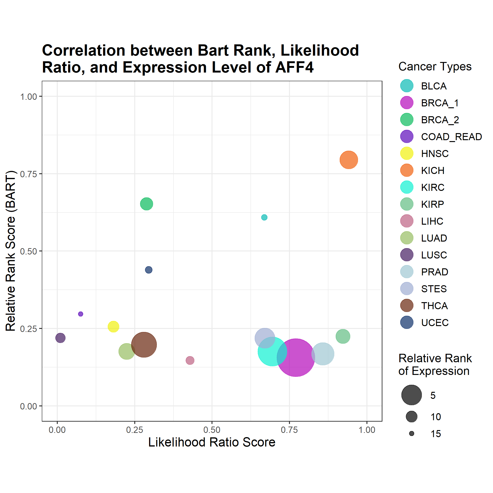

BART Cancer Transcriptional Regulators
BART Cancer Database is a web resource designed to display putative transcriptional regulators (TRs)
that are responsible for up and downregulation of genes in 15 different cancer types in The Cancer Genome Atlas.
BART Cancer uses BART (Binding Analysis for Regulation of Transcription) to make the prediction.
BART Cancer integrated over 10,000 gene expression profiling datasets from TCGA with over 7,000 TR ChIP-seq
datasets from the Cistrome database and the public domain.
For information on the different cancer types and how data was selected and analyzed, please refer to the help page.
BART Results
Select a cancer type and differentail expression type to view BART results
Transcriptional Regulator Plots
* C_R denotes COAD_READ
For more information about these figures, please refer to the Help page.
